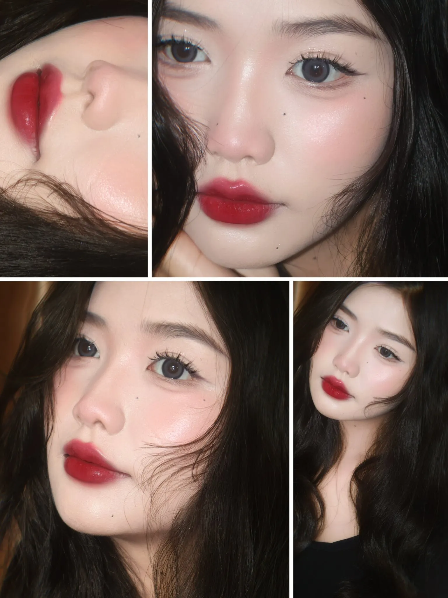

Em đang ở Bình Dương, mê makeup và muốn biến đam mê thành nghề. Nhưng lên mạng tìm thì rối: chỗ nào cũng quảng cáo hay, không biết tin ai.
Em sợ học xong vẫn không nhận được khách. Sợ tốn tiền mà tay nghề chắp vá.
Chị hiểu. Bài này Lily viết để em hiểu rõ học makeup chuyên nghiệp Bình Dương thực chất là học gì, mất bao lâu, hết bao nhiêu, và quan trọng nhất — làm sao chọn đúng nơi để ra nghề thật, không phí tiền.
Học makeup chuyên nghiệp là gì? Khác gì makeup cá nhân?
Đây là chỗ nhiều bạn nhầm, dẫn đến chọn sai khóa.
Makeup cá nhân là học để trang điểm cho chính mình — đi làm, đi tiệc, đi chơi. Mục tiêu là đẹp lên mỗi ngày, không cần làm nghề.
Makeup chuyên nghiệp là học để trang điểm cho người khác và kiếm tiền từ đó. Em phải xử lý được nhiều dạng da, nhiều dáng mặt, nhiều phong cách — từ makeup cô dâu, dự tiệc đến chụp ảnh, sự kiện.
| Tiêu chí | Makeup cá nhân | Makeup chuyên nghiệp |
|---|---|---|
| Mục tiêu | Tự makeup cho mình | Làm nghề, nhận khách |
| Đối tượng makeup | Chỉ gương mặt mình | Nhiều dạng da, dáng mặt |
| Thời lượng | Ngắn (vài buổi) | Dài, bài bản (vài tháng) |
| Kết quả | Tự tin mỗi ngày | Có nghề, có thu nhập |
Hiểu khác biệt này rồi, em sẽ thấy: nếu mục tiêu là làm nghề, đừng tiếc mà chọn khóa cá nhân cho rẻ. Hai con đường khác hẳn nhau.
Học makeup chuyên nghiệp Bình Dương phù hợp với ai?
Không phải ai cũng cần khóa chuyên nghiệp. Nhưng nếu em nằm trong các nhóm sau, học makeup chuyên nghiệp Bình Dương đúng là hướng đi cho em:
- Gen Z 18–24 muốn theo nghề — mê makeup và muốn biến nó thành công việc kiếm sống.
- Bạn muốn làm KOC/KOL, sáng tạo nội dung — cần kỹ năng makeup chuẩn để lên hình và nhận booking.
- Người đi làm muốn chuyển nghề — chán công việc hiện tại, muốn một nghề tự do hơn.
- Bạn muốn mở studio hoặc nhận khách tại nhà — cần nền tảng đủ chắc để tự tin báo giá.
Điểm chung của các nhóm này: em không học cho vui, em học để ra tiền. Vì vậy nơi học phải dạy em đến mức nhận khách được, chứ không chỉ “biết makeup”.
Học makeup chuyên nghiệp gồm những gì? Lộ trình 4 bước
Một khóa makeup chuyên nghiệp bài bản không nhảy ngay vào “vẽ cho đẹp”. Nó xây nền trước, rồi mới lên kỹ thuật. Ở Lily Chen, lộ trình chia 4 bước rõ ràng:


Bước 1 — Nền tảng
Hiểu cấu trúc gương mặt, phân tích từng loại da, học cách chọn tone màu hợp với từng người. Đây là phần lý thuyết nền — bỏ qua là về sau makeup ai cũng giống ai.
Bước 2 — Kỹ thuật
Luyện thao tác tay: cầm cọ, tán nền, đi eyeliner, kẻ mày, đánh khối. Makeup là nghề của đôi tay, nên phần này phải lặp đi lặp lại đến khi thành phản xạ.
Bước 3 — Thực chiến trên mẫu thật
Đây là bước quyết định em có nhận khách được hay không. Em thực hành trên mẫu thật với nhiều dạng da, dáng mặt khác nhau — vì gương mặt khách không bao giờ giống gương mặt em.
Bước 4 — Tốt nghiệp & định hướng
Thi tốt nghiệp, được cấp chứng chỉ và định hướng nghề nghiệp — gồm cả góp ý cách xây portfolio để nhận những khách đầu tiên.
Điều chị tâm đắc nhất ở lộ trình này là 90% thời lượng dành cho thực hành, lớp tối đa 5 học viên để chị chỉnh tay từng người. Em xem tác phẩm học viên đã làm sau khóa để hình dung kết quả thật.
Học makeup chuyên nghiệp bao lâu? Học phí khoảng bao nhiêu?
Hai câu hỏi này luôn đi cùng nhau, nên chị nói thẳng.
Về thời lượng: một khóa chuyên nghiệp để ra nghề thường kéo dài vài tháng — đủ thời gian luyện tay trên nhiều mẫu thật. Khóa Chuyên Nghiệp tại Lily Chen có lộ trình khoảng 3 tháng. Đừng tin các lời hứa “7 ngày thành thợ” — tay nghề cần thời gian luyện, không có đường tắt.
Về học phí: mức giá khóa chuyên nghiệp trên thị trường dao động khá rộng tùy nơi và tùy giảng viên. Tại Lily Chen, khóa Makeup Chuyên Nghiệp đang áp dụng ưu đãi từ 30.000.000đ còn 25.000.000đ, hỗ trợ trả góp 2–3 đợt.
Nghe có vẻ lớn, nhưng em thử nhìn theo cách khác: đây là khoản đầu tư cho một cái nghề. Một makeup artist có nghề thật có thể kiếm 10–20 triệu/tháng (theo tổng hợp từ các trang hướng nghiệp như Glints Vietnam). Học một lần, dùng cả đời — rẻ hơn nhiều so với mày mò vài năm rồi làm lại từ đầu.
Cách chọn nơi học makeup chuyên nghiệp Bình Dương
Đây là phần chị muốn em đọc kỹ nhất, vì chọn sai chỗ là mất cả tiền lẫn thời gian.
Nhiều bạn nghĩ phải lên Sài Gòn mới học được nghề tử tế. Thật ra không cần — vừa tốn kém, vừa xa nhà. Điều quan trọng không phải học ở thành phố nào, mà là chỗ đó dạy em thế nào. Khi tìm nơi học makeup chuyên nghiệp Bình Dương, em kiểm tra 5 điểm:
- Tỉ lệ thực hành cao — học chay nhiều lý thuyết thì ra trường vẫn run tay. Ưu tiên nơi cho thực hành trên mẫu thật nhiều.
- Sĩ số lớp nhỏ — lớp đông thì em chỉ ngồi nhìn. Lớp nhỏ mới được giảng viên cầm tay chỉnh từng thao tác.
- Có tác phẩm học viên thật — đây là bằng chứng rõ nhất về chất lượng. Hỏi xem ảnh đó do học viên hay do giảng viên làm.
- Học phí minh bạch — công bố rõ ràng, không phát sinh phụ phí dụng cụ mập mờ.
- Có hỗ trợ sau khóa — định hướng nghề, góp ý portfolio rất quan trọng với người mới ra nghề.
Một academy local tại Thủ Dầu Một, học gần nhà, chi phí hợp lý mà vẫn được kèm sát — đó là lợi thế lớn so với việc khăn gói lên thành phố lớn.
Tự học makeup hay đi học trung tâm?
Câu hỏi muôn thuở. Chị nói công bằng cả hai phía.
Tự học (YouTube, TikTok) — miễn phí, chủ động giờ giấc. Nhưng kiến thức rời rạc, mỗi nơi một kiểu, và không ai sửa lỗi cho em. Em làm được mặt mình, nhưng gặp da khác, mặt khác là lúng túng. Để làm nghề thì rất khó.
Học trung tâm — tốn học phí, theo lịch. Đổi lại em có lộ trình, được thực hành trên nhiều mẫu thật, và có người chỉnh tay ngay khi sai. Đây là con đường ngắn hơn để nhận khách được.
Nếu em chỉ muốn makeup cho vui, tự học là đủ. Nhưng nếu mục tiêu là làm nghề, đầu tư một khóa bài bản sẽ tiết kiệm cho em nhiều năm mò mẫm. (Chị có viết riêng một bài về nghề makeup có tương lai không và thu nhập thực tế nếu em muốn cân nhắc kỹ trước khi quyết định.)
Câu hỏi thường gặp
Học makeup chuyên nghiệp Bình Dương bao lâu thì ra nghề?
Thường vài tháng, tùy độ chăm luyện. Quan trọng không phải học nhanh mà là được thực hành đủ trên mẫu thật để tay quen việc trước khi nhận khách.
Em chưa biết gì về makeup, học chuyên nghiệp được không?
Được. Khóa chuyên nghiệp luôn bắt đầu từ nền tảng cho người mới. Với lớp nhỏ và được kèm sát, người chưa biết gì vẫn theo kịp.
Học makeup chuyên nghiệp có cần năng khiếu không?
Makeup là kỹ năng học được, không phải tài năng bẩm sinh. Phần lớn là luyện tập mà thành. Người chịu thực hành đều tiến bộ.
Học phí khóa makeup chuyên nghiệp ở Bình Dương khoảng bao nhiêu?
Tùy nơi và giảng viên. Tại Lily Chen, khóa Chuyên Nghiệp đang ưu đãi còn 25.000.000đ, có hỗ trợ trả góp. Em để lại thông tin để được tư vấn gói phù hợp.
Học xong có được cấp chứng chỉ không?
Có. Sau bài thi tốt nghiệp, em được cấp chứng chỉ — dùng được khi xin việc tại studio hoặc làm hồ sơ đối tác với các thương hiệu mỹ phẩm.
Học xong có được hỗ trợ nhận khách không?
Có. Sau khóa, chị hỗ trợ định hướng nghề và góp ý để em xây portfolio, tự tin nhận những khách đầu tiên.
Kết luận
Tóm lại, nếu em đang nghiêm túc muốn theo nghề, học makeup chuyên nghiệp Bình Dương hoàn toàn đủ để em ra nghề — miễn là chọn đúng nơi.
Nhớ ba điều:
- Khóa chuyên nghiệp khác hẳn khóa cá nhân — chọn đúng mục tiêu.
- Tay nghề nằm ở thực hành — ưu tiên nơi cho thực hành nhiều, lớp nhỏ.
- Đầu tư đúng từ đầu rẻ hơn mày mò lại — cả về tiền lẫn thời gian.
Nếu em muốn xem chi tiết lộ trình, em ghé khóa Makeup Chuyên Nghiệp tại Lily Chen hoặc xem tất cả các khóa học. Còn phân vân chỗ nào, cứ nhắn cho chị — Lily tư vấn thẳng thắn xem hướng nào hợp với em nhất.